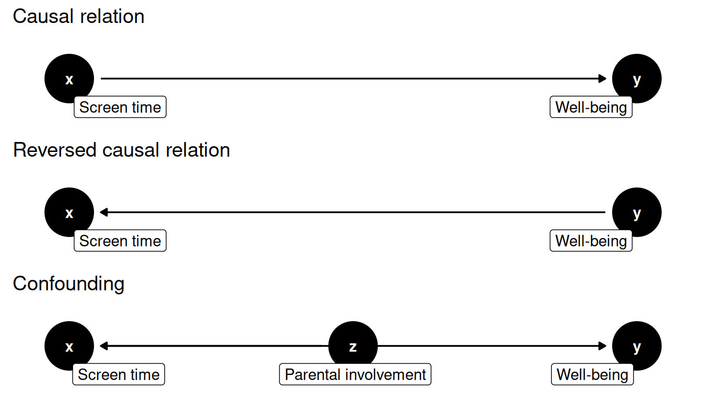

Causality
How to find evidence for causal relations?

Testing causal relations
In communication science we are often concerned with causal relations. Consider the following two examples:
- When news media focus heavily on certain issues, it enhances the public’s perception of their importance (Mccombs and Shaw 1972).
- More screen time among children and adolescents is associated with lower psychological well-being (Twenge and Campbell 2018).
Research into such causal relations is important, because by understanding causal mechanisms, we can develop strategies to change the outcomes for the better. If more screen time causes lower psychological well-being, we should advice parents to limit children’s screen time.
In order to determine whether we should really incur the wrath of our children by taking away their smartphones, we need to test our theory with empirical data. As usual, we can derive hypotheses that predict relationships between variables, and then test these hypotheses with statistical methods. However, when testing causal relations, we need to particularly careful!
A common mistake is to assume that a correlation between two variables implies a causal relationship. Even if we find strong evidence that people that have more screen time also have lower psychological well-being, this does not prove that screen time causes lower well-being! There is a famous saying in statistics: correlation does not imply causation. In this tutorial you will learn why this is the case, and how to deal with it.
Why correlation does not imply causation
Causation implies a cause-effect relationship, where a change in one variable (the cause) leads to a change in the other (the effect). The cause does not need to be the only cause of the effect (there are many things that affect well-being), nor does it always need to lead to the effect (some people with high screen time will be happier than other with low screen time). It is enough that the cause increases the likelihood of the effect. If we were to somehow manipulate the cause, we would expect the likelihood of the effect to change.
Correlation, on the other hand, only indicates an association or relationship between two variables. It makes sense why people can confuse this for a causal relationship. If we see that people that that are often on their phone are overall less happy, it is easy to assume that the phone is the cause of their unhappiness. But in order to establish whether a correlation is due to a causal relationship, we need address three issues:
- Confounding: A correlation could be due to a third variable that causes both of them to change. Both screen time and psychological well-being could for instance be influenced by parental involvement. If the relation between two variables is not because they are causally related, but because they are both influenced by a third variable, we call this a spurious correlation. The third variable that causes the correlation is called a confounding variable.
- Directionality: A correlation does not tell us which variable causes the other. It could be that more screen time causes lower psychological well-being, but it could also be that children with lower psychological well-being spend more time on screens. If this is the case, taking away their phone would not help!
- Coincidence: A correlation is also spurious if it is just a coincidence. This is something we can address with statistical tests, but it bears keeping in mind. (See the box below for some famous examples of spurious correlations.)
Famous spurious correlations
A famous example is that across European countries the number of storks is quite strongly correlated with the number of newborn babies (\(\rho = 0.62\)). A naive interpretation would be that this provides evidence for the folk theory that storks deliver babies. The real reason in this case is due to a confounding variable: the size of the country. Larger countries simply have more storks and more babies.
There is also a website called Spurious Correlations, that is dedicated to finding coincidental spurious correlations, such as the correlation between the number of people who drowned by falling into a pool and the number of films Nicolas Cage appeared in.
Visualizing causation
To develop a good intuition for the difference between correlation and causation, it helps to have a good mental model of what a causal relationship looks like. A good way to do this is to use Directed Acyclic Graphs (DAGs), which are a visual way to represent causal relationships. Simply put, these are graphs where the arrows indicate the direction of the causal relationship. Here are three DAGs that show different reasons for a correlation between X and Y. X represents what we believe to be the cause (e.g., screen time), and Y the effect (e.g., well-being). Z represents a confounding variable (e.g., parental involvement).
This shows why a correlation between X and Y is not enough to establish causation. Each of these DAGs shows a different reason for the correlation between X and Y, but only the first one supports our hypothesis that X causes Y. Our job as researchers is to figure out which of these DAGs is best supported by empirical evidence.
How to (better) establish causation
Let’s first acknowledge that establishing causation is hard (see Pearl (2009)). But this should not deter us from doing our best to build evidence for causal relationships! Luckily, we have a number of strategies at our disposal to build evidence for causation.
Theoretical foundation
The most important thing is to have a theoretical foundation for a causal relationship. This means that we have a good reason to believe that that a change in one variable will lead to a change in the other.
Ideally, this theory should be based on a priori reasoning, meaning that you develop your theory before you collect data. This avoids the risks of post hoc (Latin for “after this”) reasoning, which is also known as HARKing (Hypothesizing After the Results are Known). The prime risk of post hoc reasoning is that you end up shaping a theory to fit the data, rather than using theory to guide your data collection and analysis. Many scientific journals therefore require you to pre-register your hypotheses before you start collecting data. This doesn’t mean that there is no room for exploration in your data, but it does mean that you should be transparent about what you were looking for based on a priori reasoning, and what you learned from post hoc reasoning about your data.
Theory also helps us to identify possible confounding variables. Consider for example the gender gap in chess. Women are underrepresented in chess, with especially few women at the top levels (Chabris and Glickman 2006). A naive interpretation would be that this is because, as grandmaster Garry Kasparov said in 1989: “Men are hardwired to be better chess players than women”. To properly understand where this gap comes from, we need to build theory that takes alternative explanations into account. If you have time for a tangent, try reading this Slate Magazine article and see if you can identify some of the confounding variables that the author mentions.
If possible, conduct an experiment
The gold standard for establishing causation is the randomized controlled experiment, in which the researcher manipulates the cause and observes the effect, while keeping all other variables constant. In order to manipulate the cause, the researcher creates different experimental conditions. The classic example comes from the field of medicine: you give some participants a medicine you want to test, where others get a placebo (i.e. a fake medicine that only looks the same). The people that got the real medicine are then the treatment group, and the people that got the placebo are the control group To test if the medicine works, you compare the treatment group to the control group.1
The experimental design helps to adress both confounding and directionality.
- By randomly assigning people to the treatment or control group, the people in both groups are statistically identical. If the randomization is done correctly, any possible confounding variables are equally distributed between the two groups, and so any difference in the outcome can be attributed to the treatment.
- By comparing the treatment group to the control group, you can account for confounding variables that have to do with the process of appyling the treatment. A well known example of this is the placebo effect, where people feel better just because they think they’re taking a medicine (control group), and not because of the actual medicine (treatment group). If the medicine works, the treatment group should see a stronger effect than the control group.
This ability to eliminate the influence of confounders makes experiments a powerful tool for establishing causation. However, in the field of communication science it is often not possible (or ethical) to conduct valid experiments. For many of the causes that we are interested in, it is simply not possible to manipulate it in a controlled setting that is still sufficiently similar to the real world.
For observational data, control for confounders
If we cannot conduct an experiment, we can to some extend control for confounding variables using statistical methods. This is not as powerful as an experiment, but it does allow us to establish some level of evidence for causation from observational data. In fact, many well supported causal theories in communication science have only been supported this way, such as the relationship between media coverage and public opinion (Mccombs and Shaw 1972). And even well established causal relations like “smoking causes cancer” rely heavily on evidence from observational studies. Given that many communication science theories cannot be tested with experiments, being able to gather evidence for causal relations from observational data is an essential part of the communication scientist’s toolkit.
The trick behind statistically controlling for confounders lies in multivariate analysis (i.e. analyzing more than two variables at the same time). If we are worried that a correlation between a dependent variable and independent variable is due to a third variable, we can add this confounding variable to the analysis. Using techniques like multiple regression, we can then measure the effect of the independent variable on the dependent variable while holding the confounding variable constant. We also call this controlling for the confounder.
The main limitation of this approach is that we can only control for the variables that we have measured. This puts an even greater burden on having a solid theoretical foundation for the relationships we test.
Triangulation
It is generally the case that we cannot determine causality from a single study, and need to build a body of evidence from multiple studies that point in the same direction. An experiment might be able to establish causality, but only for a very specific context and short term effects. An observational study might be able to find correlations that are consistent across many different contexts and time periods, but it cannot establish causality. To build theory on complicated issues such as the relationship between screen time and well-being, we need to combine both types of studies.
For example, in their study on screen time and well-being, Twenge and Campbell presented valuable data on the correlation between these variables, but emphasized that based on their data they cannot determine the direction of the relationship (Twenge and Campbell 2018, 281). So to build a stronger case for the causal relationship, they also discussed literature that looked at this from other angles. One study they mention is an experiment that showed that people that took a one week break from Facebook showed higher well-being than people that continued using Facebook (Tromholt 2016). By itself this experiment does not prove that the problem is screen time, but if multiple similar experiments show that manipulating different forms of screen time has a positive effect on well-being, it strengthens the argument that the correlation between screen time and well-being is due to a causal relationship.
References
Chabris, Christopher F., and Mark E. Glickman. 2006. “Sex Differences in Intellectual Performance: Analysis of a Large Cohort of Competitive Chess Players.” Psychological Science 17 (12): 1040–46. https://doi.org/10.1111/j.1467-9280.2006.01828.x.
Mccombs, Maxwell, and Donald Shaw. 1972. “The Agenda-Setting Function of Mass Media.” Public Opinion Quarterly 36 (June): 176–87. https://doi.org/10.1086/267990.
Pearl, Judea. 2009. Causality. Cambridge university press.
Tromholt, Morten. 2016. “The Facebook Experiment: Quitting Facebook Leads to Higher Levels of Well-Being.” Cyberpsychology, Behavior, and Social Networking 19 (11): 661–66.
Twenge, Jean M., and W. Keith Campbell. 2018. “Associations Between Screen Time and Lower Psychological Well-Being Among Children and Adolescents: Evidence from a Population-Based Study.” Preventive Medicine Reports 12: 271–83. https://doi.org/https://doi.org/10.1016/j.pmedr.2018.10.003.
Footnotes
A similar example from communication science could be that you want to test the effictiveness of a new persuasion strategy. You could then show the treatment group a persuasive message that uses the new strategy, and the control group a message that doesn’t.↩︎